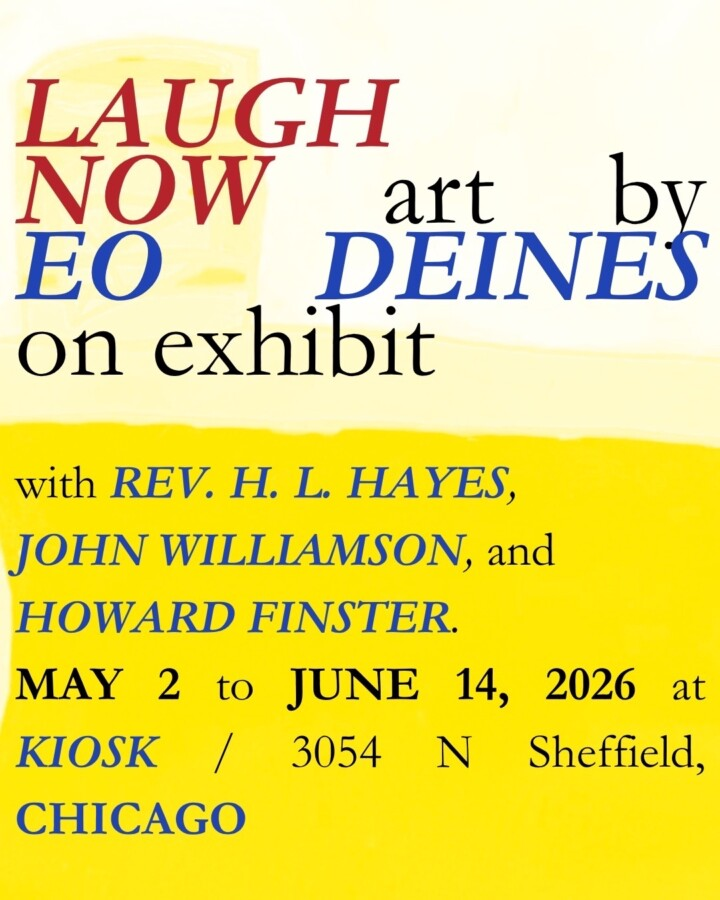

LAUGH NOW
New paintings by EO Deines, small carvings by Reverend H. L. Hayes, and works by John Williamson, including an intervention within a carved clock case by Howard Finster.

New paintings by EO Deines, small carvings by Reverend H. L. Hayes, and works by John Williamson, including an intervention within a carved clock case by Howard Finster.